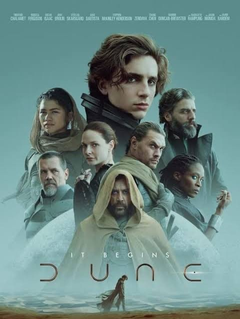

Merhabalar.Ben Şenay ŞAHİN Sivasta yaşıyorum.Hayvanları,bitkileri ve toprağı çok ama çok seviyorum.Bilimkurgu ve gerilim izlemeyi çok severim. Web gweliştirme ile ilgileniyorum. Kodluyoruz Front-end eğitimi ile harika şeyler öğrenerek sürkeli kendimi geliştiriyorum.
Dune:Çöl Gezegeni
Uzak bir gelecekte geçen "Dune", ailesi çöl gezegeni Arrakis’in kontrolüne sahip olan Paul Atreides’in hikayesini anlatıyor. Galaksinin farklı noktalarındaki gezegenler, rakip feodal aileler tarafından yönetilmektedir. Çok değerli bir kaynağın tek üreticisi olan çöl gezegeni Arrakis'in kontrolü asil aileler arasında son derece talep görmektedir. "Baharat" adı verilen bu kaynak, yüksek bilinç ve uzun bir yaşam süresi sunarken, beraberinde çok ciddi yan etkileri de getirmektedir. Ayrıca yıldızlararası yollarda gezinmeye yardımcı olan kaynak da bu "baharat"tır. Bu kaynağı elde etmek isteyen feodal rakiplerden Harkonen ailesi tarafından Paul ve ailesine tuzak kurulur. Bu tuzağın sonucunda Paul'un ailesi darmadağın olarak firari hale gelir. Paul, ailesinin Arrakis kontrolünü yeniden kazanması için bir isyan başlatırken, tüm evrenin seyrini değiştirebilme ihtimalini yakalayacaktır.